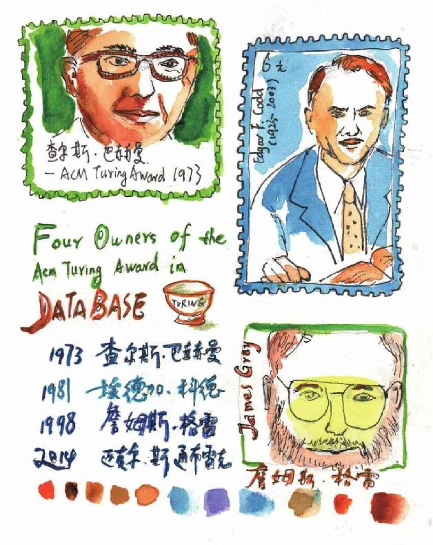

最近这段时间，如果晚上没有其他的事，小文和妈妈有一个散步时间，地点一般在校园的操场。这个北区的操场是小文小时候经常光顾的地方。那时候，时常是一做完作业，一堆小伙伴就聚在这里玩耍，旁边是妈妈们在一起闲聊。记得有一次，小伙伴们闲来无事，大家把鞋子脱了，在操场边的沙坑里埋鞋子玩，到天黑要回家时，有个小伙伴的一只鞋子找不到了，动员大家一起找，后来是否找到现在也不记得了。
小文上中学以后，这个操场就来得少了。这时候，母女俩一边在跑道上转圈，一边天南地北地又瞎聊起来。
“老妈，诺贝尔奖怎么没有数学奖啊？”
“这个问题呀有好几个说法，其中一种说法与一个叫莱夫勒（Mittag Leffler）的数学家有关。”
“他是什么人？”
“莱夫勒当时在数学上的成就很高，人们普遍认为，如果要设诺贝尔数学奖的话，那么他将是第一个获得该奖项的不二人选。据说，诺贝尔为了阻止这件事的发生，最终决定不设诺贝尔数学奖。莱夫勒非常富有，他在斯德哥尔摩的郊外建了一座豪华别墅，供数学家们免费使用。也许诺贝尔觉得，莱夫勒得到的已足够多，多到不需要诺贝尔奖了吧。”
“你前几天提到有一个数学奖叫菲尔兹奖，菲尔兹是数学家还是阔佬啊？”
“数学领域除了有菲尔兹奖还有阿贝尔奖、沃尔夫奖。菲尔兹（John Charles Fields）是一位加拿大数学家，菲尔兹奖是在他的倡导下设立的。菲尔兹奖每四年才评选一次，它的一个最大特点是只授予40岁以下的数学家，至今为止，有两位华人获得过菲尔兹奖，一位是丘成桐先生，另一位叫陶哲轩。嗯，菲尔兹奖荣誉很高，不过奖金只有15 000加拿大元，折合人民币大约7万元。”
“7万元？！”
“不要这么惊讶好不好？有很多东西是不能用钱来衡量的。顺便说一下，计算机界类似诺贝尔奖的是图灵奖。”
“介绍介绍。”
“图灵奖是美国计算机协会设立的一个奖项，专门奖励在计算机科学中作出创造性贡献的科学家，之所以以‘图灵’命名，主要是为了纪念图灵（Alan Turing）在计算机方面的杰出贡献。对了，你不是本尼迪克特的粉丝吗，他主演过一部《模仿游戏》，就是讲图灵的。”
“真的吗，相信图灵本人应该没有本尼迪克特长得帅吧。”
“恰恰相反，我觉得图灵本人比本尼迪克特帅。”
“算了，跟你谈不拢。图灵的丰功伟绩有哪些呢？”
“我们现在干什么都离不开计算机，但是100年前，人们并不清楚计算机到底应该是什么样的一种机器，图灵在20世纪30年代写了一篇论文，他在这篇论文中对计算机的结构和原理做了猜想，诸如：计算机可以由哪几部分组成，如何计算和工作，并且给出了一个计算机的抽象模型，现在这种模型被称为‘图灵机’。后来计算机界公认，随后出现的所有与电子计算机有关的理论和模型，都源于图灵的这篇论文。”
“没想到一篇论文有这么牛。”
“不过说起来有点意思，‘图灵机’并不是这篇论文的主题。”
“这是怎么回事呢？”
“前面我们提过希尔伯特，还记得吧？”
“嗯嗯。”
“希尔伯特在提出那著名的23个数学问题的大约30年后，他针对算术计算又提出了三个问题，图灵是想在这篇论文中回答这三个问题中的第三个：有些数学问题是不可计算求解的。为了回答这个问题，图灵把“计算”定义为一个机械的过程。同时，他问了这样一个问题：要是机器，它会怎么做？但在当时，没有一台真实的机器可供参考，于是图灵在脑子里构造了一个可以计算的机器——图灵机，并在他的论文中列出了图灵机必备的几个部件：纸带、符号和状态等。”
图灵机
妈妈接着说：“图灵这篇论文对希尔伯特的问题给出否定的回答，可以说，‘图灵机’模型只是这篇论文主题的一个脚注，‘顺便’提出来的。”
“论文的这个边角余料真牛啊，图灵有没有造出自己设想的机器呢？”
“没有，他也许压根就没打算去建造这部机器。”
“图灵奖颁奖是一年一次还是四年一次？”
“一年一次，一次一般只奖励一名科学家。”
“有没有中国人得图灵奖呢？”
“至今为止，以美国人居多，还有少数英国、瑞士、荷兰、以色列人。”
“为什么？”
“这也很好理解嘛，因为这个奖项的组织者是美国——虽然图灵是英国人，呵呵——此外就计算机发展水平而言，美国也是最高的。”
“也算可以理解吧。”
“大概在2000年的时候，图灵奖授予了一位华人学者，叫姚期智，你有时间可以到网上查查。”
“又是华人学者啊。”
“科学无国界嘛。有些领域很受图灵奖青睐，比如计算机数据库领域，前后4次获奖。”
“数据库是什么？”
“数据库可以看作是存储和管理数据的仓库。”
“需要管理哪些数据呢？”
“你的高考成绩、学籍、邮件都是数据。去超市购物、去图书馆借书、去银行取钱——这些行为都会产生数据。”
“跟我相关的数据还真不少。”
“是呀，并且这些数据十分庞杂。把你自己想象成离散世界的一员，从你出生的那一刻起，每一天都在产生很多很多的数据，这些数据无一不是你和其他离散个体之间发生的联系。”
“好像是这样，不过，还是举个例子吧。”
“这个，一句两句说不清呀。况且我们也该打道回府了，等我把接下来的讲义准备好，发过来你先自己看看。”
一天之后，妈妈的讲义如期而至。
